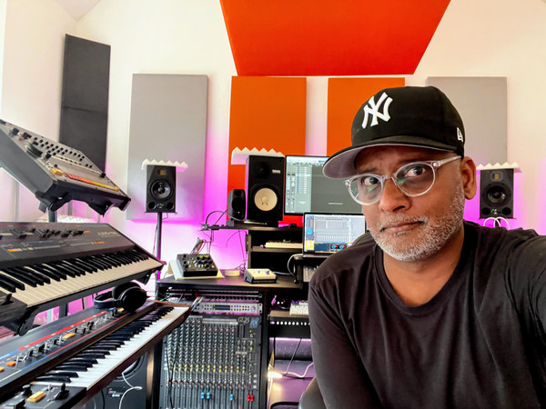

Where to find acapellas for producing and DJing
{kind=link}

Throwing a vocal into the mix is one of the best ways to add an edge to that track you’re working on. It's also a creative way to inject fresh energy into to your DJ sets. There are a wealth of royalty-free vocal samples available online that you can work into your MASCHINE and KOMPLETE set-up, or layer over the top of your DJ selections within your TRAKTOR set.
An acapella is a vocal-only track that can be both added as an element into your productions, or mixed into your DJ set. The latter opens up the possibility of creating live remixes in a club setting. If you’re working on a new track, a licensed rap or vocal stem, offers an easier alternative to partnering with a vocalist. Options for royalty-free acapellas include popular sample libraries, while subscription-based sample library Sounds.com offers access to a cutting-edge selection of studio-ready acapellas that is regularly updated with new vocals.
If you’re on the hunt for vocals to mix into your DJ set, there is an infinite selection available online to choose from. However, if you’re searching for an acapella to actually use within your own productions (what’s referred to as “Commercial Use”), it’s important that you select one that is royalty-free and properly licensed, to save you from potential litigious action.
LA-based music-industry lawyer Vic Sapphire emphasizes the importance in distinguishing between platforms that offer acapellas for use in your DJ sets, and the acapella sample that are already royalty-free and cleared for “Commercial Use” in your productions. “If you feature an acapella in your track without obtaining the proper license, you run the risk of the copyright owner either issuing a takedown notice to the different platforms where your track is available, or otherwise pursuing a costly legal claim against the copyright infringement,” he says.
Keeping your vocals fresh
Sameer Sengupta is an LA-based producer, mixer and mastering engineer with a background as an electronic artist and live performer in the Australian clubbing scene that dates back to the late 90s. Sameer now works with other artists to help them realize their vision in the studio, and states that there are numerous sources where budding music producers can find acapellas that are royalty-free and properly licensed for commercial use in their tracks.
“Short of getting an actual vocalist, there are literally thousands of sample libraries,” he says. “However, something you’ll notice once you start using these vocal samples is you’ll often recognize them from tracks that you’ve already heard. Because those libraries are static, everyone is drawing from the same pool of sounds. They get used a lot!”
“To get around this, one of my favorite ways to keep finding fresh sounds is the subscription model of Sounds.com. It features a nearly limitless source of sounds, including vocal acapellas, which are constantly updated on a daily or weekly basis. I use them when I need a last minute addition to something or even as the spark to inspire a new piece. For me, Sounds.com is where it’s at right now.”
Using Acapellas in your DJ Sets
If you’re looking to make your mark as a DJ, layering a vocal over the top of your mix offers the perfect way to do it. You can find a huge selection via the same digital retailers where you buy your DJ tracks, such as Beatport, and you can also dive into the select online communities where acapellas are shared among users (check out this guide by Digital DJ Tips for more info). There are also multiple ways that an acapella can help add a creative flair to your DJing.
DJ and producer Patrice Bäumel performs everywhere from Coachella to Hï Ibiza, releasing with some of the world’s leading house and techno labels like Kompakt and Afterlife. Bäumel states that an acapella offers the perfect path to creating an unforgettable moment in your DJ set.
“For me, acapellas are the cherry on the cake, that little extra for creating a memorable moment in your set,” he says. “This is the moment that people will remember from your set by the next day. Many acapellas are universally known, and I use their familiarity to break the ice with a difficult crowd or to push the party over the edge at the absolute peak of the night.”
Mo’funk is an Ibiza fixture who holds residencies at some of the Island’s biggest clubs, a renowned turntablist that regularly supports Ibiza icons like Carl Cox and weaves hip hop, house, and disco into a flowing party style. He says acapellas offer an effective way to smooth out transitions between musical genres, as well as help add a sense of progression.
“I use acapellas to fill the breaks and breakdowns with a little extra flavor,” he says. “It allows me to introduce something new, a chorus or a verse alongside a groovy loop that I have playing on the other deck. It helps with flow and set progression. Do it, but only if you have the skills.”
If you’re looking to integrate acapellas into your TRAKTOR setup, Stems offers the perfect way to make it happen. As a file format developed to allow more creative control over DJing, Stems splits a track into its main musical elements – including vocals – and is built from the ground up to allow you to work with acapellas in your DJing.
Sites for finding acapellas
Whether you’re looking for a licensed rap for the track you’re prepping for release, or just want to add some vocal flavor to your DJ set of trap instrumentals, this is where you can find them.
1. Sounds.com
Sounds.com is a growing library of licensed, studio-ready samples and sounds that is updated daily, including a vast array of royalty-free acapellas that are licensed and ready to drop into your tracks. You can access its library via a monthly subscription plan (available on a free monthly trial). Other key features include its Sounds Originals that tap into signature sounds from artists like Diplo, plus its Collections section for curated libraries like Vocal Booth that pull together some of the best new acapellas out there.
2. Beatport
Beatport is the platform where a majority of digital tracks for DJs are purchased and includes an Acapellas category within its DJ Tools section, featuring an abundance of vocals that you can layer into your DJ sets.
3. Sites for Vocal Stems
Native Instruments offer a range of vocal Stems that you can use in your sets free of charge. Additionally, digital retailers selling DJ tracks offer vocal acapellas in their Stems section.